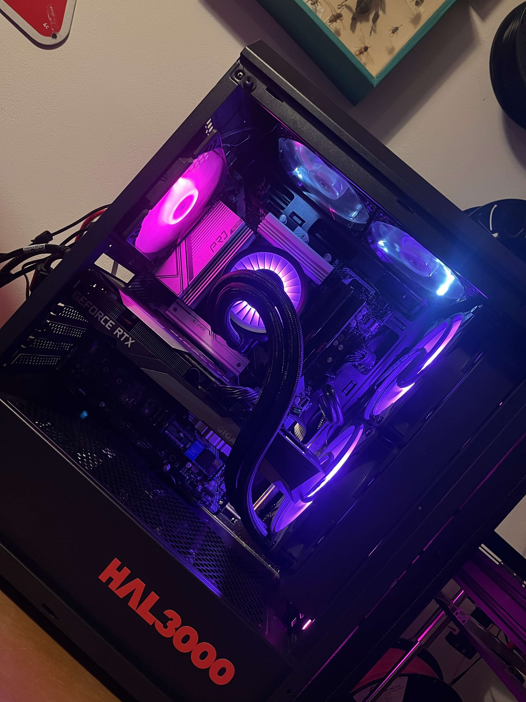

Opravy a diagnostika
Najdu příčinu problému a navrhnu cestu, která dává smysl výkonem i cenou.
- PC a notebooky
- Softwarové i hardwarové závady
- Reinstalace a základní nastavení
Lokální servis pro PC a notebooky
Pomůžu s opravou, upgradem i sestavením nového PC. Bez zbytečného technického žargonu, s jasným vysvětlením a řešením, které dává smysl i dlouhodobě.

Služby
Místo složitého servisu čekejte srozumitelný postup, jasné doporučení a řešení podle toho, co zařízení opravdu potřebuje.
Najdu příčinu problému a navrhnu cestu, která dává smysl výkonem i cenou.
Když zařízení nestačí, pomůžu ho posunout dál bez zbytečného utrácení.
Sestavím počítač pro práci, studium nebo hraní a vysvětlím, proč byly zvolené právě tyto díly.
Pomoc s nastavením zařízení a běžnými problémy přímo tam, kde je používáte.
Jak to probíhá
Popíšete, co zařízení dělá, kdy problém začal a co od řešení očekáváte.
Vysvětlím, co je příčina problému a jestli dává větší smysl oprava, upgrade nebo nová sestava.
Po dokončení vše zkontroluju a srozumitelně shrnu, co bylo hotové a na co si dát pozor dál.
Blog
Praktické články o údržbě, rychlosti systému a péči o zařízení bez zbytečné omáčky.
Na co si dát pozor, když ventilátor hučí, zařízení se přehřívá a výkon padá.
Číst článekCo čekat od výměny disku a jak se připravit na bezpečný přesun dat.
Číst článekRychlý checklist, který pomůže odhalit, proč se počítač rozjíždí déle, než by měl.
Číst článek